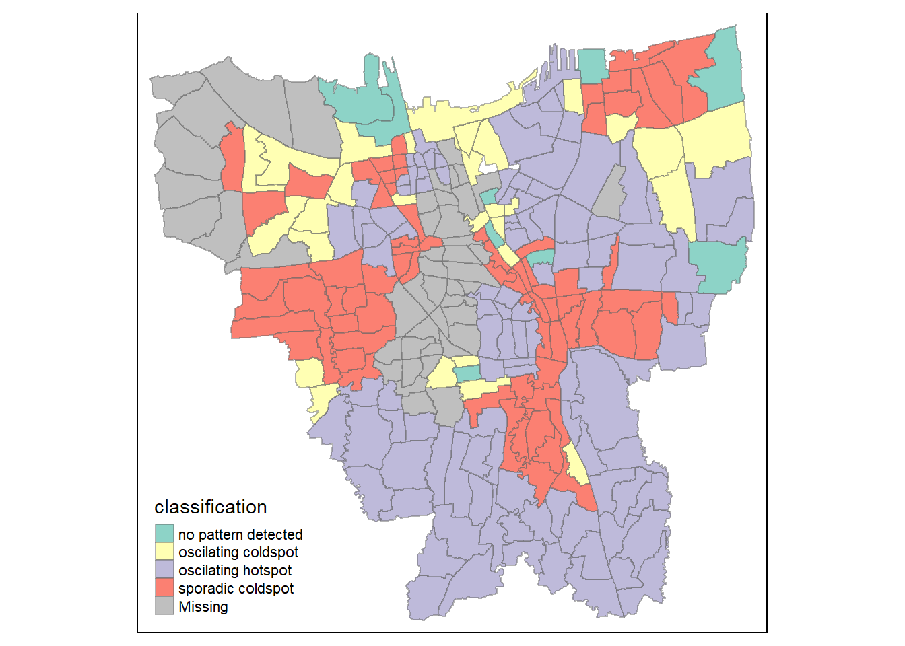

pacman::p_load(tidyverse, tmap, sf, spdep, sfdep, readxl, stringr) Take-Home Exercise 02
Getting Started
Installing packages
Importing and preparing data
Geospatial
jakarta <- st_read(dsn = "data",
layer="BATAS_DESA_DESEMBER_2019_DUKCAPIL_DKI_JAKARTA")Reading layer `BATAS_DESA_DESEMBER_2019_DUKCAPIL_DKI_JAKARTA' from data source
`C:\xinyeehow\IS415-GAA\Take-Home_Ex\Take-Home_Ex02\data' using driver `ESRI Shapefile'
Simple feature collection with 269 features and 161 fields
Geometry type: MULTIPOLYGON
Dimension: XY
Bounding box: xmin: 106.3831 ymin: -6.370815 xmax: 106.9728 ymax: -5.184322
Geodetic CRS: WGS 84Since we are only concerned about the first 9 rows, we can remove the rest to reduce the number of variables
jakarta <- jakarta %>% dplyr::select(c(0:9))Setting the correct projection
jakarta <- jakarta %>% st_transform(crs=23845)
st_crs(jakarta)Coordinate Reference System:
User input: EPSG:23845
wkt:
PROJCRS["DGN95 / Indonesia TM-3 zone 54.1",
BASEGEOGCRS["DGN95",
DATUM["Datum Geodesi Nasional 1995",
ELLIPSOID["WGS 84",6378137,298.257223563,
LENGTHUNIT["metre",1]]],
PRIMEM["Greenwich",0,
ANGLEUNIT["degree",0.0174532925199433]],
ID["EPSG",4755]],
CONVERSION["Indonesia TM-3 zone 54.1",
METHOD["Transverse Mercator",
ID["EPSG",9807]],
PARAMETER["Latitude of natural origin",0,
ANGLEUNIT["degree",0.0174532925199433],
ID["EPSG",8801]],
PARAMETER["Longitude of natural origin",139.5,
ANGLEUNIT["degree",0.0174532925199433],
ID["EPSG",8802]],
PARAMETER["Scale factor at natural origin",0.9999,
SCALEUNIT["unity",1],
ID["EPSG",8805]],
PARAMETER["False easting",200000,
LENGTHUNIT["metre",1],
ID["EPSG",8806]],
PARAMETER["False northing",1500000,
LENGTHUNIT["metre",1],
ID["EPSG",8807]]],
CS[Cartesian,2],
AXIS["easting (X)",east,
ORDER[1],
LENGTHUNIT["metre",1]],
AXIS["northing (Y)",north,
ORDER[2],
LENGTHUNIT["metre",1]],
USAGE[
SCOPE["Cadastre."],
AREA["Indonesia - onshore east of 138°E."],
BBOX[-9.19,138,-1.49,141.01]],
ID["EPSG",23845]]Removing outer islands of Jakarta (by filtering KAB_KOTA column, removing Kabupaten Kepulauan Seribu)
jakarta <- jakarta %>% filter(`KAB_KOTA` %in% c('JAKARTA BARAT',
'JAKARTA PUSAT',
'JAKARTA SELATAN',
'JAKARTA TIMUR',
'JAKARTA UTARA'))Inspecting layer
jakartaSimple feature collection with 261 features and 9 fields
Geometry type: MULTIPOLYGON
Dimension: XY
Bounding box: xmin: -3644275 ymin: 663887.8 xmax: -3606237 ymax: 701380.1
Projected CRS: DGN95 / Indonesia TM-3 zone 54.1
First 10 features:
OBJECT_ID KODE_DESA DESA KODE PROVINSI KAB_KOTA
1 25477 3173031006 KEAGUNGAN 317303 DKI JAKARTA JAKARTA BARAT
2 25478 3173031007 GLODOK 317303 DKI JAKARTA JAKARTA BARAT
3 25397 3171031003 HARAPAN MULIA 317103 DKI JAKARTA JAKARTA PUSAT
4 25400 3171031006 CEMPAKA BARU 317103 DKI JAKARTA JAKARTA PUSAT
5 25390 3171021001 PASAR BARU 317102 DKI JAKARTA JAKARTA PUSAT
6 25391 3171021002 KARANG ANYAR 317102 DKI JAKARTA JAKARTA PUSAT
7 25394 3171021005 MANGGA DUA SELATAN 317102 DKI JAKARTA JAKARTA PUSAT
8 25386 3171011003 PETOJO UTARA 317101 DKI JAKARTA JAKARTA PUSAT
9 25403 3171041001 SENEN 317104 DKI JAKARTA JAKARTA PUSAT
10 25408 3171041006 BUNGUR 317104 DKI JAKARTA JAKARTA PUSAT
KECAMATAN DESA_KELUR JUMLAH_PEN geometry
1 TAMAN SARI KEAGUNGAN 21609 MULTIPOLYGON (((-3626874 69...
2 TAMAN SARI GLODOK 9069 MULTIPOLYGON (((-3627130 69...
3 KEMAYORAN HARAPAN MULIA 29085 MULTIPOLYGON (((-3621251 68...
4 KEMAYORAN CEMPAKA BARU 41913 MULTIPOLYGON (((-3620608 69...
5 SAWAH BESAR PASAR BARU 15793 MULTIPOLYGON (((-3624097 69...
6 SAWAH BESAR KARANG ANYAR 33383 MULTIPOLYGON (((-3624785 69...
7 SAWAH BESAR MANGGA DUA SELATAN 35906 MULTIPOLYGON (((-3624752 69...
8 GAMBIR PETOJO UTARA 21828 MULTIPOLYGON (((-3626121 69...
9 SENEN SENEN 8643 MULTIPOLYGON (((-3623189 69...
10 SENEN BUNGUR 23001 MULTIPOLYGON (((-3622451 69...Aspatial - Vaccination rates of Jakarta from July 2021 to June 2022 (data taken from every last day of the month)
setwd("C:/xinyeehow/IS415-GAA/Take-Home_Ex/Take-Home_Ex02/data")
files.list <- list.files(pattern='*.xlsx')
df.list <- setNames(lapply(files.list, read_excel, sheet="Data Kelurahan"), files.list)
df <- bind_rows(df.list, .id = "id")df <- df %>%
mutate_at("id", str_replace, ".xlsx", "")df$id <- as.Date(df$id, format="%Y-%m-%d")Filtering data, excluding unwanted zones (only want Jakarta Barat, Jakarta Pusat, Jakarta Selatan, Jakarta Timur, and Jakarta Utara in Wilayah Kota column)
df <- df %>% filter(`WILAYAH KOTA` %in% c('JAKARTA BARAT',
'JAKARTA PUSAT',
'JAKARTA SELATAN',
'JAKARTA TIMUR',
'JAKARTA UTARA'))Filtering other unwanted columns (only keeping administrative boundaries locations and total vaccination information
df <- df %>% dplyr::select(c(0:11))Inspecting vaccine information
df# A tibble: 3,132 × 11
id KODE KEL…¹ WILAY…² KECAM…³ KELUR…⁴ SASARAN BELUM…⁵ JUMLA…⁶ JUMLA…⁷
<date> <chr> <chr> <chr> <chr> <dbl> <dbl> <dbl> <dbl>
1 2021-07-31 3172051003 JAKART… PADEMA… ANCOL 23947 12333 11614 4181
2 2021-07-31 3173041007 JAKART… TAMBORA ANGKE 29381 13875 15506 4798
3 2021-07-31 3175041005 JAKART… KRAMAT… BALE K… 29074 18314 10760 3658
4 2021-07-31 3175031003 JAKART… JATINE… BALI M… 9752 5173 4579 2007
5 2021-07-31 3175101006 JAKART… CIPAYU… BAMBU … 26285 13775 12510 5206
6 2021-07-31 3174031002 JAKART… MAMPAN… BANGKA 21566 10443 11123 4010
7 2021-07-31 3175051002 JAKART… PASAR … BARU 23886 10063 13823 6118
8 2021-07-31 3175041004 JAKART… KRAMAT… BATU A… 47898 28848 19050 7261
9 2021-07-31 3171071002 JAKART… TANAH … BENDUN… 21494 9978 11516 4602
10 2021-07-31 3175031002 JAKART… JATINE… BIDARA… 36689 21784 14905 5490
# … with 3,122 more rows, 2 more variables: `JUMLAH\r\nDOSIS 3` <dbl>,
# `TOTAL VAKSIN\r\nDIBERIKAN` <dbl>, and abbreviated variable names
# ¹`KODE KELURAHAN`, ²`WILAYAH KOTA`, ³KECAMATAN, ⁴KELURAHAN,
# ⁵`BELUM VAKSIN`, ⁶`JUMLAH\r\nDOSIS 1`, ⁷`JUMLAH\r\nDOSIS 2`Joining aspatial and geospatial information by common columns
jkt_df <- left_join(jakarta, df, by = c("DESA" = "KELURAHAN"))Plotting chloropleth map for examination - first dose
tm_shape(jkt_df) +
tm_polygons("JUMLAH\r\nDOSIS 1")We can see some missing values (in grey) in the plot generated above.
Identifying missing values
Let’s have a glimpse of all the names of the sub-districts first
unique(jkt_df$DESA) [1] "KEAGUNGAN" "GLODOK" "HARAPAN MULIA"
[4] "CEMPAKA BARU" "PASAR BARU" "KARANG ANYAR"
[7] "MANGGA DUA SELATAN" "PETOJO UTARA" "SENEN"
[10] "BUNGUR" "CEMPAKA PUTIH TIMUR" "RAWASARI"
[13] "MENTENG" "CIKINI" "PETAMBURAN"
[16] "KEBON MELATI" "KAMPUNG RAWA" "TUGU UTARA"
[19] "KAMAL MUARA" "PLUIT" "LAGOA"
[22] "PAPANGGO" "SUNGAI BAMBU" "KEBON BAWANG"
[25] "WARAKAS" "KOJA" "TUGU SELATAN"
[28] "RAWA BADAK SELATAN" "CILINCING" "WIJAYA KUSUMA"
[31] "KALIBARU" "ROROTAN" "SEMPER BARAT"
[34] "PADEMANGAN TIMUR" "PADEMANGAN BARAT" "ANCOL"
[37] "KELAPA GADING TIMUR" "CENGKARENG BARAT" "MANGGA BESAR"
[40] "KAPUK" "CENGKARENG TIMUR" "TANJUNG DUREN UTARA"
[43] "JELAMBAR" "KRENDANG" "SUKABUMI UTARA"
[46] "SUKABUMI SELATAN" "KELAPA DUA" "DURI KEPA"
[49] "KEDOYA UTARA" "KEDOYA SELATAN" "PEGADUNGAN"
[52] "PALMERAH" "KOTA BAMBU SELATAN" "RAWA BUNGA"
[55] "KEMBANGAN UTARA" "MERUYA UTARA" "SRENGSENG"
[58] "KEBON BARU" "MANGGARAI SELATAN" "SETIA BUDI"
[61] "KARET SEMANGGI" "KARET KUNINGAN" "MENTENG ATAS"
[64] "PASAR MANGGIS" "GUNTUR" "KUNINGAN TIMUR"
[67] "MAMPANG PRAPATAN" "BANGKA" "RAGUNAN"
[70] "PEJATEN TIMUR" "PEJATEN BARAT" "KEBAGUSAN"
[73] "KEBAYORAN LAMA UTARA" "CIPULIR" "GROGOL SELATAN"
[76] "SENAYAN" "PONDOK LABU" "GANDARIA SELATAN"
[79] "CIPETE SELATAN" "PULO" "GANDARIA UTARA"
[82] "PETUKANGAN SELATAN" "KALIBATA" "RAWAJATI"
[85] "LENTENG AGUNG" "JAGAKARSA" "CIPEDAK"
[88] "BINTARO" "PISANGAN BARU" "KEBON MANGGIS"
[91] "UTAN KAYU SELATAN" "JATINEGARA KAUM" "JATI"
[94] "CIPINANG MUARA" "CIPINANG BESAR SELATAN" "CIPINANG BESAR UTARA"
[97] "TENGAH" "DUKUH" "BALEKAMBANG"
[100] "CILILITAN" "KALISARI" "DUREN SAWIT"
[103] "KLENDER" "PONDOK KOPI" "PINANGRANTI"
[106] "KEBON PALA" "CIRACAS" "CIPAYUNG"
[109] "KEMAYORAN" "UTAN PANJANG" "PISANGAN TIMUR"
[112] "RAWA BADAK UTARA" "TANJUNG DUREN SELATAN" "JELAMBAR BARU"
[115] "KEBON KOSONG" "SERDANG" "GUNUNG SAHARI SELATAN"
[118] "SUMUR BATU" "KEBON KELAPA" "DURI PULO"
[121] "KARTINI" "GUNUNG SAHARI UTARA" "GAMBIR"
[124] "CIDENG" "PETOJO SELATAN" "KENARI"
[127] "PASEBAN" "KRAMAT" "KWITANG"
[130] "CEMPAKA PUTIH BARAT" "PEGANGSAAN" "GONDANGDIA"
[133] "KEBON SIRIH" "GELORA" "BENDUNGAN HILIR"
[136] "KARET TENGSIN" "KEBON KACANG" "KAMPUNG BALI"
[139] "JOHAR BARU" "GALUR" "TANAH TINGGI"
[142] "PENJARINGAN" "KAPUK MUARA" "PEJAGALAN"
[145] "TANJUNG PRIOK" "SUNTER JAYA" "SUNTER AGUNG"
[148] "SUKAPURA" "MARUNDA" "SEMPER TIMUR"
[151] "TAMAN SARI" "KRUKUT" "PEGANGSAAN DUA"
[154] "KELAPA GADING BARAT" "DURI KOSAMBI" "RAWA BUAYA"
[157] "KEDAUNG KALI ANGKE" "MAPHAR" "TANGKI"
[160] "GROGOL" "TOMANG" "PINANGSIA"
[163] "TAMBORA" "KALI ANYAR" "DURI UTARA"
[166] "TANAH SEREAL" "JEMBATAN BESI" "ANGKE"
[169] "JEMBATAN LIMA" "PEKOJAN" "ROA MALAKA"
[172] "DURI SELATAN" "CIPINANG" "KEBON JERUK"
[175] "KALIDERES" "SEMANAN" "TEGAL ALUR"
[178] "KAMAL" "SLIPI" "KOTA BAMBU UTARA"
[181] "JATIPULO" "KEMANGGISAN" "MERUYA SELATAN"
[184] "TEBET BARAT" "JOGLO" "KEMBANGAN SELATAN"
[187] "TEBET TIMUR" "CIPINANG CEMPEDAK" "MENTENG DALAM"
[190] "BUKIT DURI" "MANGGARAI" "KARET"
[193] "JATI PADANG" "PELA MAMPANG" "TEGAL PARANG"
[196] "KUNINGAN BARAT" "PASAR MINGGU" "CILANDAK TIMUR"
[199] "PONDOK PINANG" "GROGOL UTARA" "KEBAYORAN LAMA SELATAN"
[202] "CILANDAK BARAT" "LEBAK BULUS" "MELAWAI"
[205] "GUNUNG" "KRAMAT PELA" "SELONG"
[208] "RAWA BARAT" "PETOGOGAN" "CIPETE UTARA"
[211] "PANCORAN" "DUREN TIGA" "PENGADEGAN"
[214] "CIKOKO" "SRENGSENG SAWAH" "CIGANJUR"
[217] "TANJUNG BARAT" "PESANGGRAHAN" "PETUKANGAN UTARA"
[220] "PULO GADUNG" "ULUJAMI" "UTAN KAYU UTARA"
[223] "KAYU MANIS" "PALMERIAM" "RAWAMANGUN"
[226] "KAYU PUTIH" "KAMPUNG MELAYU" "BIDARA CINA"
[229] "BALI MESTER" "KRAMATJATI" "MAKASAR"
[232] "BATU AMPAR" "CAWANG" "GEDONG"
[235] "BARU" "CIJANTUNG" "PEKAYON"
[238] "JATINEGARA" "RAWA TERATE" "PENGGILINGAN"
[241] "CAKUNG TIMUR" "PULO GEBANG" "UJUNG MENTENG"
[244] "CAKUNG BARAT" "PONDOK BAMBU" "PONDOK KELAPA"
[247] "MALAKA SARI" "MALAKA JAYA" "HALIM PERDANA KUSUMA"
[250] "CIPINANG MELAYU" "CIBUBUR" "KELAPA DUA WETAN"
[253] "SUSUKAN" "RAMBUTAN" "CILANGKAP"
[256] "PONDOK RANGGON" "MUNJUL" "SETU"
[259] "BAMBU APUS" "LUBANG BUAYA" "CEGER" df_unique <- unique(df$KELURAHAN)jakarta_unique <- unique(jakarta$DESA)Identifying problematic names
(df_unique[!(df_unique %in% jakarta_unique)])[1] "BALE KAMBANG" "HALIM PERDANA KUSUMAH" "JATI PULO"
[4] "KAMPUNG TENGAH" "KERENDANG" "KRAMAT JATI"
[7] "PAL MERIAM" "PINANG RANTI" "RAWA JATI" (jakarta_unique[!(jakarta_unique %in% df_unique)])[1] "KRENDANG" "RAWAJATI" "TENGAH"
[4] "BALEKAMBANG" "PINANGRANTI" "JATIPULO"
[7] "PALMERIAM" "KRAMATJATI" "HALIM PERDANA KUSUMA"Fixing problematic names
df$KELURAHAN[df$KELURAHAN == "KERENDANG"] <- "KRENDANG"
df$KELURAHAN[df$KELURAHAN == "RAWA JATI"] <- "RAWAJATI"
df$KELURAHAN[df$KELURAHAN == "KAMPUNG TENGAH"] <- "TENGAH"
df$KELURAHAN[df$KELURAHAN == "BALE KAMBANG"] <- "BALEKAMBANG"
df$KELURAHAN[df$KELURAHAN == "PINANG RANTI"] <- "PINANGRANTI"
df$KELURAHAN[df$KELURAHAN == "JATI PULO"] <- "JATIPULO"
df$KELURAHAN[df$KELURAHAN == "PAL MERIAM"] <- "PALMERIAM"
df$KELURAHAN[df$KELURAHAN == "KRAMAT JATI"] <- "KRAMATJATI"
df$KELURAHAN[df$KELURAHAN == "HALIM PERDANA KUSUMAH"] <- "HALIM PERDANA KUSUMA"Checking map again for confirmation
jkt_df <- left_join(jakarta, df, by = c("DESA" = "KELURAHAN"))tm_shape(jkt_df) +
tm_polygons("JUMLAH\r\nDOSIS 1")Now, we can calculate the rates of first, second and third dose rates for Jakarta. We can do so by adding all of the first dose (in all 12 months from July 2021 to June 2022) and dividing by the target vaccinated population of Jakarta to find out how far Jakarta is from the target.
First dose:
first_dose <- jkt_df %>%
group_by(DESA, id) %>%
summarise(`1st Dose` = sum(`JUMLAH\r\nDOSIS 1`) / SASARAN)Second dose:
second_dose <- jkt_df %>%
group_by(DESA, id) %>%
summarise(`2nd Dose` = sum(`JUMLAH\r\nDOSIS 2`) / SASARAN)Third dose:
third_dose <- jkt_df %>%
group_by(DESA, id) %>%
summarise(`3rd Dose` = sum(`JUMLAH\r\nDOSIS 3`) / SASARAN)Plotting chloropleth maps
First dose:
tmap_mode("plot")
tm_shape(first_dose) +
tm_polygons("1st Dose",
palette = "Blues") +
tm_facets(by = "id") +
tm_borders(alpha = 0.5)Analysis:
As we can visualise from the plot above, the percentage of targeted vaccine rates have been increasing from the beginning of the study (July 2021) to the end of the study (June 2022). The south of Jakarta managed to reach the target the quickest, with the north of Jakarta only reaching the targeted vaccine rates completely only in February 2022, 4 months after south Jakarta reached the targeted vaccine rates.
Second dose:
tmap_mode("plot")
tm_shape(second_dose) +
tm_polygons("2nd Dose",
palette = "Blues") +
tm_facets(by = "id") +
tm_borders(alpha = 0.5)Analysis:
For the second dose, only a few sub-districts managed to hit the targeted vaccine rates even by the end of our study (June 2022). For the rest of the Jakarta sub-districts, most of them only managed to reach 60-80% of the targeted vaccine rates. It seemed like the progression did not change much after the fifth month of study (November 2021).
Third dose:
tmap_mode("plot")
tm_shape(third_dose) +
tm_polygons("3rd Dose",
palette = "Blues") +
tm_facets(by = "id") +
tm_borders(alpha = 0.5)Analysis:
There were no data available for the third dose of vaccine till the ninth month of study (March 2022). For the remaining four months of the study, there seemed to be very little progression to achieve the targeted vaccine rates for all the sub-districts of Jakarta, except for 2 of the sub-districts. For a more detailed analysis of the third dose, a longer study period is required to observe the trend as 4 months is insufficient.
Local Gi Analysis
Filtering out 1 month’s data (we will use the most recent data - June 2022)
vaccine <- first_dose %>%
cbind(second_dose$`2nd Dose`, third_dose$`3rd Dose`)june <- vaccine[vaccine$id == "2022-06-30.xlsx",]Setting seed - for reproducibility
set.seed(9999)Deriving contiguity weights - Queen’s method
wm_q <- june %>%
mutate(nb = st_contiguity(geometry),
wt = st_weights(nb,
style = "W"),
.before = 1) wm_qSimple feature collection with 261 features and 7 fields
Geometry type: MULTIPOLYGON
Dimension: XY
Bounding box: xmin: -3644275 ymin: 663887.8 xmax: -3606237 ymax: 701380.1
Projected CRS: DGN95 / Indonesia TM-3 zone 54.1
First 10 features:
nb
12 68, 150, 162, 163, 167, 183, 192, 216, 235
24 78, 79, 80, 175
36 8, 32, 58, 177
48 10, 41, 91, 113, 165, 193, 211
60 17, 34, 144, 226
72 30, 36, 37, 48, 85, 176, 180, 202
84 26, 87, 143, 243
96 3, 32, 58, 135, 251
108 59, 98, 99, 114, 185, 222
120 4, 12, 16, 41, 91, 107, 211
wt
12 0.1111111, 0.1111111, 0.1111111, 0.1111111, 0.1111111, 0.1111111, 0.1111111, 0.1111111, 0.1111111
24 0.25, 0.25, 0.25, 0.25
36 0.25, 0.25, 0.25, 0.25
48 0.1428571, 0.1428571, 0.1428571, 0.1428571, 0.1428571, 0.1428571, 0.1428571
60 0.25, 0.25, 0.25, 0.25
72 0.125, 0.125, 0.125, 0.125, 0.125, 0.125, 0.125, 0.125
84 0.25, 0.25, 0.25, 0.25
96 0.2, 0.2, 0.2, 0.2, 0.2
108 0.1666667, 0.1666667, 0.1666667, 0.1666667, 0.1666667, 0.1666667
120 0.1428571, 0.1428571, 0.1428571, 0.1428571, 0.1428571, 0.1428571, 0.1428571
DESA id X1st.Dose second_dose..2nd.Dose.
12 ANCOL 2022-06-30 0.8161774 0.7143275
24 ANGKE 2022-06-30 0.8284265 0.7219972
36 BALEKAMBANG 2022-06-30 0.8062874 0.7022082
48 BALI MESTER 2022-06-30 0.8383921 0.7615874
60 BAMBU APUS 2022-06-30 0.8557733 0.7823093
72 BANGKA 2022-06-30 0.8248168 0.7429751
84 BARU 2022-06-30 0.8697982 0.8021854
96 BATU AMPAR 2022-06-30 0.8138336 0.7182972
108 BENDUNGAN HILIR 2022-06-30 0.8334419 0.7619801
120 BIDARA CINA 2022-06-30 0.8072719 0.7198888
third_dose..3rd.Dose. geometry
12 0.3077212 MULTIPOLYGON (((-3621016 69...
24 0.3432831 MULTIPOLYGON (((-3628922 69...
36 0.2544542 MULTIPOLYGON (((-3620179 67...
48 0.3693601 MULTIPOLYGON (((-3620268 68...
60 0.3496291 MULTIPOLYGON (((-3612584 67...
72 0.2860985 MULTIPOLYGON (((-3626607 67...
84 0.4214603 MULTIPOLYGON (((-3621054 67...
96 0.2866926 MULTIPOLYGON (((-3618791 67...
108 0.3923886 MULTIPOLYGON (((-3627088 68...
120 0.3007713 MULTIPOLYGON (((-3619635 68...Computing local Gi statistics
wm_idw <- june %>%
mutate(nb = st_contiguity(geometry),
wts = st_inverse_distance(nb, geometry,
scale = 1,
alpha = 1),
.before = 1)Computing Hot Spot and Cold Spot Area Analysis
First Dose
HCSA_1st <- wm_idw %>%
mutate(local_Gi = local_gstar_perm(
`X1st.Dose`, nb, wt, nsim = 99),
.before = 1) %>%
unnest(local_Gi)
HCSA_1stSimple feature collection with 261 features and 15 fields
Geometry type: MULTIPOLYGON
Dimension: XY
Bounding box: xmin: -3644275 ymin: 663887.8 xmax: -3606237 ymax: 701380.1
Projected CRS: DGN95 / Indonesia TM-3 zone 54.1
# A tibble: 261 × 16
gi_star e_gi var_gi p_value p_sim p_fold…¹ skewn…² kurto…³ nb wts
<dbl> <dbl> <dbl> <dbl> <dbl> <dbl> <dbl> <dbl> <nb> <lis>
1 -0.131 0.00383 5.56e-10 0.896 0.88 0.44 -0.122 0.342 <int> <dbl>
2 -1.04 0.00382 9.09e-10 0.297 0.32 0.16 -0.226 0.158 <int> <dbl>
3 -2.47 0.00383 7.99e-10 0.0136 0.04 0.02 -0.189 0.309 <int> <dbl>
4 -1.65 0.00383 6.65e-10 0.0988 0.14 0.07 0.223 1.21 <int> <dbl>
5 1.30 0.00384 8.08e-10 0.194 0.26 0.13 -0.322 0.460 <int> <dbl>
6 0.0724 0.00383 7.05e-10 0.942 0.96 0.48 0.136 0.0902 <int> <dbl>
7 2.47 0.00383 1.47e- 9 0.0134 0.06 0.03 0.194 0.650 <int> <dbl>
8 -2.46 0.00382 9.67e-10 0.0140 0.02 0.01 0.198 -0.564 <int> <dbl>
9 -4.25 0.00383 7.94e-10 0.0000215 0.02 0.01 0.195 0.258 <int> <dbl>
10 -1.97 0.00384 7.00e-10 0.0487 0.08 0.04 -0.195 -0.251 <int> <dbl>
# … with 251 more rows, 6 more variables: DESA <chr>, id <date>,
# X1st.Dose <dbl>, second_dose..2nd.Dose. <dbl>, third_dose..3rd.Dose. <dbl>,
# geometry <MULTIPOLYGON [m]>, and abbreviated variable names ¹p_folded_sim,
# ²skewness, ³kurtosisVisualising first dose, setting the significance level (i.e. p-values less than 0.05) hot spot and cold spot areas
HCSA_1st_sig <- HCSA_1st %>%
filter(p_sim < 0.05)
tmap_mode("plot")
tm_shape(HCSA_1st) +
tm_polygons() +
tm_borders(alpha = 0.5) +
tm_shape(HCSA_1st_sig) +
tm_fill("gi_star") +
tm_borders(alpha = 0.4)This hotspot and coldspot analysis above confirms our conclusion on the first dose of vaccination rates above, that the south of Jakarta is a hotspot and central/north Jakarta are coldspots.
Second Dose
HCSA_2nd <- wm_idw %>%
mutate(local_Gi = local_gstar_perm(
`second_dose..2nd.Dose.`, nb, wt, nsim = 99),
.before = 1) %>%
unnest(local_Gi)
HCSA_2ndSimple feature collection with 261 features and 15 fields
Geometry type: MULTIPOLYGON
Dimension: XY
Bounding box: xmin: -3644275 ymin: 663887.8 xmax: -3606237 ymax: 701380.1
Projected CRS: DGN95 / Indonesia TM-3 zone 54.1
# A tibble: 261 × 16
gi_star e_gi var_gi p_value p_sim p_fol…¹ skewn…² kurto…³ nb wts
<dbl> <dbl> <dbl> <dbl> <dbl> <dbl> <dbl> <dbl> <nb> <lis>
1 0.157 0.00383 2.72e-9 0.875 0.82 0.41 -0.306 -0.297 <int> <dbl>
2 -1.07 0.00382 6.39e-9 0.283 0.38 0.19 -0.160 -0.289 <int> <dbl>
3 -1.61 0.00382 5.41e-9 0.108 0.14 0.07 0.0544 0.397 <int> <dbl>
4 -1.44 0.00383 4.36e-9 0.150 0.2 0.1 -0.487 0.787 <int> <dbl>
5 0.740 0.00383 6.29e-9 0.459 0.44 0.22 0.0373 -0.0685 <int> <dbl>
6 1.22 0.00384 2.71e-9 0.221 0.24 0.12 -0.137 -0.404 <int> <dbl>
7 1.41 0.00385 6.05e-9 0.158 0.18 0.09 -0.107 0.800 <int> <dbl>
8 -2.39 0.00384 4.73e-9 0.0168 0.04 0.02 -0.0125 0.219 <int> <dbl>
9 -2.15 0.00383 3.50e-9 0.0313 0.04 0.02 0.166 -0.198 <int> <dbl>
10 -1.38 0.00383 3.36e-9 0.168 0.22 0.11 -0.317 0.126 <int> <dbl>
# … with 251 more rows, 6 more variables: DESA <chr>, id <date>,
# X1st.Dose <dbl>, second_dose..2nd.Dose. <dbl>, third_dose..3rd.Dose. <dbl>,
# geometry <MULTIPOLYGON [m]>, and abbreviated variable names ¹p_folded_sim,
# ²skewness, ³kurtosisVisualising second dose, setting the significance level (i.e. p-values less than 0.05) hot spot and cold spot areas
HCSA_2nd_sig <- HCSA_2nd %>%
filter(p_sim < 0.05)
tmap_mode("plot")
tm_shape(HCSA_2nd) +
tm_polygons() +
tm_borders(alpha = 0.5) +
tm_shape(HCSA_2nd_sig) +
tm_fill("gi_star") +
tm_borders(alpha = 0.4)This hotspot and coldspot analysis above further confirms our conclusion on the second dose of vaccination rates above, that the south of Jakarta is a hotspot and central/north Jakarta are coldspots. There seems to be a lot of similarities with the map generated during the first dose analysis.
Third Dose
HCSA_3rd <- wm_idw %>%
mutate(local_Gi = local_gstar_perm(
`third_dose..3rd.Dose.`, nb, wt, nsim = 99),
.before = 1) %>%
unnest(local_Gi)
HCSA_3rdSimple feature collection with 261 features and 15 fields
Geometry type: MULTIPOLYGON
Dimension: XY
Bounding box: xmin: -3644275 ymin: 663887.8 xmax: -3606237 ymax: 701380.1
Projected CRS: DGN95 / Indonesia TM-3 zone 54.1
# A tibble: 261 × 16
gi_star e_gi var_gi p_value p_sim p_fol…¹ skewn…² kurtosis nb wts
<dbl> <dbl> <dbl> <dbl> <dbl> <dbl> <dbl> <dbl> <nb> <lis>
1 1.33 0.00382 5.50e-8 0.184 0.22 0.11 0.306 -0.653 <int> <dbl>
2 0.611 0.00380 1.22e-7 0.541 0.54 0.27 0.0138 -0.206 <int> <dbl>
3 -1.56 0.00378 1.03e-7 0.118 0.12 0.06 0.451 0.697 <int> <dbl>
4 -1.75 0.00385 6.05e-8 0.0798 0.04 0.02 0.0556 -0.191 <int> <dbl>
5 -0.219 0.00383 1.18e-7 0.827 1 0.5 0.617 0.950 <int> <dbl>
6 0.140 0.00383 6.37e-8 0.889 0.9 0.45 0.266 -0.346 <int> <dbl>
7 0.0967 0.00385 9.43e-8 0.923 0.96 0.48 0.550 -0.269 <int> <dbl>
8 -1.88 0.00384 8.51e-8 0.0606 0.1 0.05 -0.0439 -0.213 <int> <dbl>
9 -0.423 0.00384 7.52e-8 0.672 0.82 0.41 0.375 -0.299 <int> <dbl>
10 -1.83 0.00378 5.57e-8 0.0671 0.06 0.03 0.283 0.00120 <int> <dbl>
# … with 251 more rows, 6 more variables: DESA <chr>, id <date>,
# X1st.Dose <dbl>, second_dose..2nd.Dose. <dbl>, third_dose..3rd.Dose. <dbl>,
# geometry <MULTIPOLYGON [m]>, and abbreviated variable names ¹p_folded_sim,
# ²skewnessVisualising third dose, setting the significance level (i.e. p-values less than 0.05) hot spot and cold spot areas
HCSA_3rd_sig <- HCSA_3rd %>%
filter(p_sim < 0.05)
tmap_mode("plot")
tm_shape(HCSA_3rd) +
tm_polygons() +
tm_borders(alpha = 0.5) +
tm_shape(HCSA_3rd_sig) +
tm_fill("gi_star") +
tm_borders(alpha = 0.4)Analysis:
For the third dose, the analysis results need to be taken with a pinch of salt, as it was only analysed over a 4-month period. We can conclude that the north of Jakarta still remained as a coldspot for vaccination, and the areas of hotpsot coincides with the higher vaccination rates depicted on the third dose Chloropeth map above.
Emerging Hot Spot Analysis
Time Series Cube
vaccine_st <- vaccine %>%
as_spacetime(.loc_col="DESA", .time_col="id")Computing spatial weights using Queen’s method
vaccine_nb <- vaccine_st %>%
activate("geometry") %>%
mutate(nb = include_self(st_contiguity(geometry)),
wt = st_inverse_distance(nb, geometry,
scale = 1,
alpha = 1),
.before = 1) %>%
set_wts("wt") %>%
set_nbs("nb")Computing Gi values of First Dose (Most taken dose)
gi_stars_EHSA <- vaccine_nb %>%
group_by(`id`) %>%
mutate(gi_star = local_gstar_perm(
`X1st.Dose`, nb, wt, nsim = 99)) %>%
tidyr::unnest(gi_star)
gi_stars_EHSA# A tibble: 3,132 × 15
# Groups: id [12]
DESA id X1st.…¹ secon…² third…³ wt nb gi_star e_gi var_gi
<chr> <date> <dbl> <dbl> <dbl> <lis> <lis> <dbl> <dbl> <dbl>
1 ANCOL 2021-07-31 0.485 0.175 NA <dbl> <int> 2.02 0.00385 1.14e-8
2 ANGKE 2021-07-31 0.528 0.163 NA <dbl> <int> -0.724 0.00381 2.41e-8
3 BALEK… 2021-07-31 0.370 0.126 NA <dbl> <int> -4.69 0.00382 2.02e-8
4 BALI … 2021-07-31 0.470 0.206 NA <dbl> <int> -3.53 0.00384 1.52e-8
5 BAMBU… 2021-07-31 0.476 0.198 NA <dbl> <int> -1.11 0.00383 2.74e-8
6 BANGKA 2021-07-31 0.516 0.186 NA <dbl> <int> 0.812 0.00384 1.71e-8
7 BARU 2021-07-31 0.579 0.256 NA <dbl> <int> 0.851 0.00384 2.35e-8
8 BATU … 2021-07-31 0.398 0.152 NA <dbl> <int> -4.36 0.00383 2.23e-8
9 BENDU… 2021-07-31 0.536 0.214 NA <dbl> <int> -0.962 0.00383 1.66e-8
10 BIDAR… 2021-07-31 0.406 0.150 NA <dbl> <int> -3.46 0.00381 1.68e-8
# … with 3,122 more rows, 5 more variables: p_value <dbl>, p_sim <dbl>,
# p_folded_sim <dbl>, skewness <dbl>, kurtosis <dbl>, and abbreviated
# variable names ¹X1st.Dose, ²second_dose..2nd.Dose., ³third_dose..3rd.Dose.Performing Mann-Kendall Test
Selecting 3 sub-districts to perform test
Highest first dose rate
vaccine %>%
top_n(5, `X1st.Dose`) %>%
arrange(desc(`X1st.Dose`)) %>%
dplyr::pull(DESA)[1] "HALIM PERDANA KUSUMA" "HALIM PERDANA KUSUMA" "HALIM PERDANA KUSUMA"
[4] "HALIM PERDANA KUSUMA" "HALIM PERDANA KUSUMA"Lowest first dose rate
vaccine %>%
top_n(-5,`X1st.Dose`) %>%
arrange(`X1st.Dose`) %>%
dplyr::pull(DESA)[1] "BALEKAMBANG" "PETAMBURAN" "KEBON MELATI" "BATU AMPAR" "TENGAH" Middle first dose rate
vaccine_ordered <- vaccine %>% arrange(`X1st.Dose`)
vaccine_ordered$DESA[1566][1] "ROA MALAKA"Computing Mann-Kendall Test
Highest first dose rate: HALIM PERDANA KUSUMA
cbg_hpk_EHSA <- gi_stars_EHSA %>%
ungroup() %>%
filter(DESA == "HALIM PERDANA KUSUMA") |>
select(DESA, id, gi_star)ggplot(data = cbg_hpk_EHSA,
aes(x = id,
y = gi_star)) +
geom_line() +
theme_light()cbg_hpk_EHSA %>%
summarise(mk = list(
unclass(
Kendall::MannKendall(gi_star)))) %>%
tidyr::unnest_wider(mk)# A tibble: 1 × 5
tau sl S D varS
<dbl> <dbl> <dbl> <dbl> <dbl>
1 0.455 0.0467 30 66.0 213.The SL value is the p value, is lower than our 5% significance, indicates that there is a slight upward but insignificant trend for reaching the targeted vaccination rate.
Middle first dose rate: ROA MALAKA
cbg_rm_EHSA <- gi_stars_EHSA %>%
ungroup() %>%
filter(DESA == "ROA MALAKA") |>
select(DESA, id, gi_star)ggplot(data = cbg_rm_EHSA,
aes(x = id,
y = gi_star)) +
geom_line() +
theme_light()cbg_rm_EHSA %>%
summarise(mk = list(
unclass(
Kendall::MannKendall(gi_star)))) %>%
tidyr::unnest_wider(mk)# A tibble: 1 × 5
tau sl S D varS
<dbl> <dbl> <dbl> <dbl> <dbl>
1 -0.394 0.0865 -26 66.0 213.The graph above showed a accelerated decrease in first dose rates being administered on the residents of ROA MALAKA sub-district. This may be due to the fact that most of the residents in MOA MALAKA have gone for their vaccination as soon as they were launched and were very compliant with combating COVID-19.
Middle first dose rate: BALEKAMBANG
cbg_bkb_EHSA <- gi_stars_EHSA %>%
ungroup() %>%
filter(DESA == "BALEKAMBANG") |>
select(DESA, id, gi_star)ggplot(data = cbg_bkb_EHSA,
aes(x = id,
y = gi_star)) +
geom_line() +
theme_light()
cbg_bkb_EHSA %>%
summarise(mk = list(
unclass(
Kendall::MannKendall(gi_star)))) %>%
tidyr::unnest_wider(mk)# A tibble: 1 × 5
tau sl S D varS
<dbl> <dbl> <dbl> <dbl> <dbl>
1 0.576 0.0112 38 66.0 213.The SL value is the p value, is lower than our 5% significance, indicates that there is a slight upward but insignificant trend for reaching the targeted vaccination rate.
Emerging Hot Spot Analysis (General - First Dose)
EHSA <- emerging_hotspot_analysis(
x = vaccine_st,
.var = "X1st.Dose",
k = 1,
nsim = 99
)Visualising emerging hot spot analysis
ggplot(data = EHSA,
aes(x = classification)) +
geom_bar()Visualising geographically
jakarta_EHSA <- jakarta %>%
left_join(EHSA,
by = c("DESA" = "location")) %>%
mutate(`p_value` = replace(`p_value`, `p_value` > 0.05, NA),
`classification` = ifelse(is.na(`p_value`), NA, `classification`))
tmap_mode("plot")
tm_shape(jakarta_EHSA) +
tm_fill("classification") +
tm_borders(alpha = 0.5)
Analysis
As we can infer from the map plotted out below, the south of Jakarta accounts for majority of the oscilating hotspots for the first dose of vaccination, correlating to our analysis above. The north of Jakarta also correlates to what we saw above, constituting to most of the oscilating coldspots.
References
With guidance from Prof Kam Tin Seong, and senior Megan Sim Tze Yen